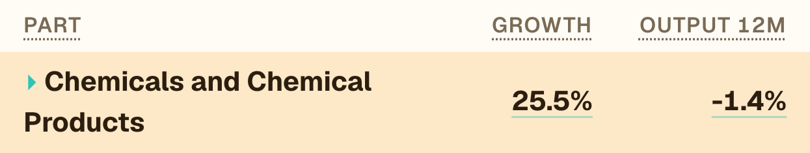
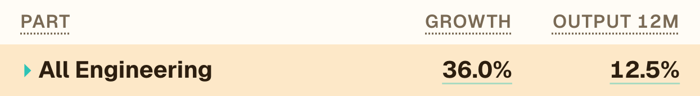
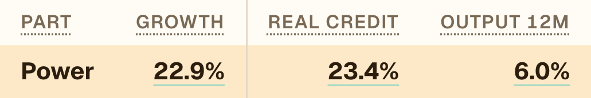
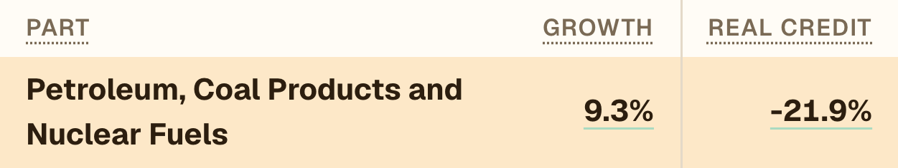

India Credit Lens · Sep 2026 · Credit vs output
Credit is running ahead of output
1
Chemicals, engineering, powerCredit well ahead of production.
2
Petroleum goes the other wayMore rupees, less real credit.
3
Gold stays hotEven after prices.
1 · Chemicals
Credit up, output down
Credit to chemical makers is at its fastest in our data.

OUTPUT 12M = production (IIP), the last 12 months against the 12 before
September alone: credit 23.5% to 25.5%. Output −0.9% to −1.4%.
2 · All engineering
The fastest line in industry credit

OUTPUT 12M = production (IIP), the last 12 months against the 12 before
September alone: credit 33.4% to 36.0%. Output 12.3% to 12.5%.
3 · Power
Lending far ahead of generation
Electricity prices (WPI) fell 0.4%, so real growth is higher still: 23.4%.

REAL CREDIT = growth with prices taken out · OUTPUT 12M = production (IIP), the last 12 months against the 12 before
September alone: credit 21.0% to 22.9%. Output 5.2% to 6.0%.
4 · Petroleum, coal products
More rupees, less real credit
Oil prices (WPI mineral oils) up 40.0%. Production up 0.6%.

REAL CREDIT = growth with prices taken out
September alone: credit 14.8% to 9.3%. Real −17.1% to −21.9%.
5 · Gold loans
Hot even after prices
Capacity being built ahead of output, or more debt per rupee of output? Both can be true, and we haven't tested which.
September alone: barely moved, 83.2% to 82.6%.